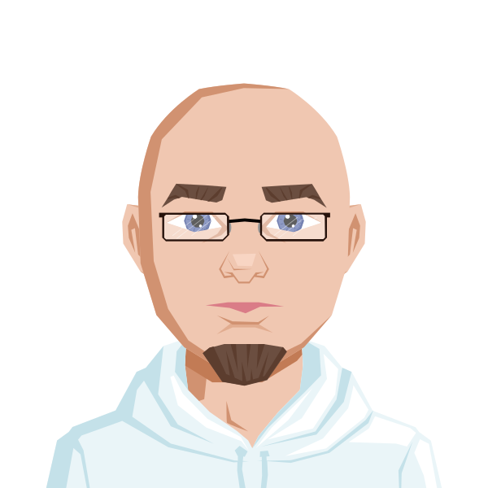

Über mich
Mein Name ist Alex, und ich bin ein kreativer Denker, der von Technologie und strategischen Herausforderungen fasziniert ist. Mein beruflicher Werdegang begann in der Gastronomie, wo ich nicht nur die Kunst des Kochens erlernte, sondern auch lernte, unter Druck präzise und ruhig zu arbeiten. Diese Erfahrungen halfen mir später, als Produktionsmitarbeiter in der Maschinenbedienung und Qualitätssicherung schnelle und fundierte Entscheidungen zu treffen.
Eine meiner größten Leidenschaften sind Strategiespiele. Sie fordern mich heraus, komplexe Szenarien zu analysieren, langfristige Strategien zu entwickeln und auf unerwartete Situationen zu reagieren. In der Theorie könnte man sagen, dass diese Denkweise mir dabei hilft, Probleme im beruflichen Alltag zu lösen. Doch ich habe auch erkannt, dass meine Liebe zum „Planen“ manchmal dazu führt, dass ich zu zögerlich werde und nicht schnell genug handle. Das ist eine Herausforderung, an der ich arbeite, um meine Flexibilität zu steigern.
Aktuell bilde ich mich zum Fachinformatiker für Anwendungsentwicklung aus. Ich möchte meine technische Neugier in greifbare Lösungen umsetzen und innovative Software entwickeln. Aber auf diesem Weg habe ich gelernt, dass mein Drang nach Perfektion und der Wunsch, immer die beste Lösung zu finden, manchmal im Weg stehen können. Doch dieser Lernprozess hilft mir, meine Herangehensweise zu verbessern und auch spontane Entscheidungen zu treffen, ohne immer auf das perfekte Ergebnis zu warten.
